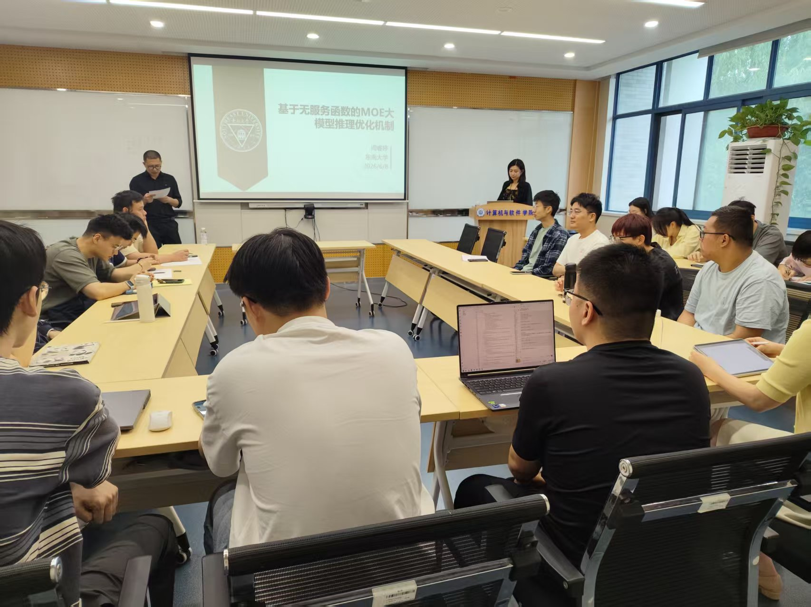
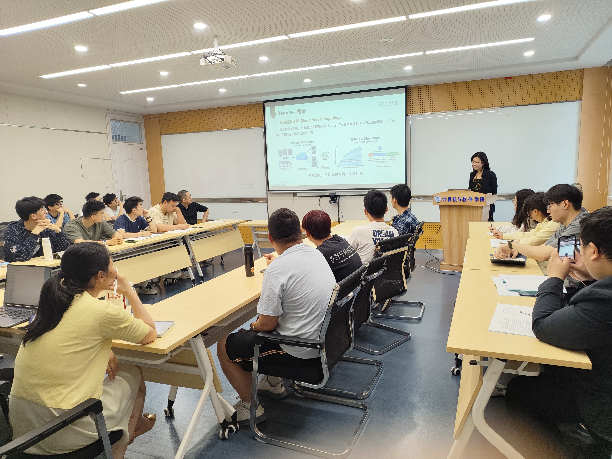

基于无服务函数的MOE大模型推理加速机制
报告摘要
混合专家模型（Mixture-of-Experts, MoE）因其通过稀疏专家激活实现模型容量扩展的能力，已成为大型语言模型（LLMs）的主流架构。与此同时，无服务器计算凭借其弹性和按需计费特性，非常适合部署具有突发工作负载的MoE模型。然而，MoE模型中大量专家模块会因参数缓存的密集内存需求导致高昂的推理成本，而简单的模型分区方法难以缓解这一问题，因为专家激活具有输入依赖性。为解决这些问题，我们提出了专为无服务器计算设计的异构MoE推理系统Remoe。该系统将非专家模块分配至GPU，专家模块分配至CPU，并将低频激活的专家进一步卸载至独立无服务器函数，以降低内存开销并实现并行执行。我们在Kubernetes上实现了Remoe，并在多个LLM基准测试中进行了评估。实验结果表明，与现有最优基线相比，Remoe将推理成本降低高达57%，冷启动延迟减少47%。
报告人简介
周睿婷，东南大学计算机科学与工程学院教授，博导。2018年在加拿大卡尔加里大学获得计算机科学博士学位。香港中文大学计算机科学与工程学系博士后。研究兴趣为云计算与边缘计算、边缘智能、AI Infra。已发表60余篇CCF A/B类论文（包括IEEE INFOCOM、IEEE JSAC、IEEE/ACM TON等）。担任IEEE INFOCOM Workshop ICCN 2019-2026和BIGCOM 2022程序委员会主席，并担任多个CCF A/B类会议和顶级期刊审稿人。主持了国家重点研发青年科学家项目任务、国家自然科学基金面上项目等项目。获得5次国际会议最佳论文奖/提名奖、ACM SIGCOMM CHINA 新星奖。入选南京市中青年拔尖人才、湖北省百人计划、武汉市黄鹤英才优秀青年人才项目。
报告人职务及简介据2026年活动海报。
现场照片



